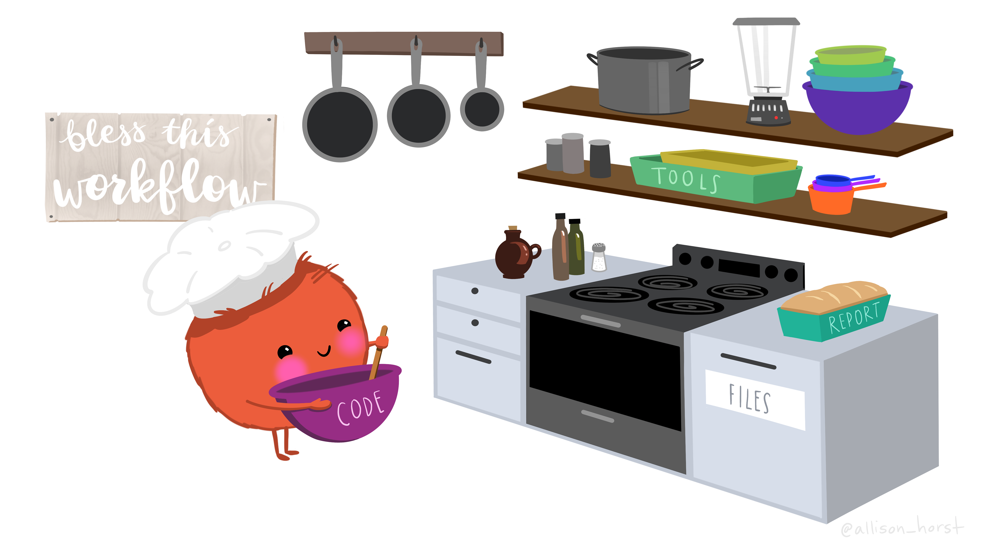

Learning Objectives
- Be introduced to R programming resources for learning beyond the course
- Get oriented with the RStudio interface
3.1 Welcome to Programming in R

There is a vibrant community out there that is collectively developing increasingly easy to use and powerful open source programming tools. The changing landscape of programming is making learning how to code easier than it ever has been. Incorporating programming into analysis workflows not only makes science more efficient, but also more computationally reproducible. In this course, we will use the programming language R, and the accompanying integrated development environment (IDE) RStudio. R is a great language to learn for data-oriented programming because it is widely adopted, user-friendly, and (most importantly) open source!
So what is the difference between R and RStudio? Here is an analogy to start us off. If you were a chef, R is a knife. You have food to prepare, and the knife is one of the tools that you’ll use to accomplish your task.
And if R were a knife, RStudio is the kitchen. RStudio provides a place to do your work! Other tools, communication, community, it makes your life as a chef easier. RStudio makes your life as a researcher easier by bringing together other tools you need to do your work efficiently - like a file browser, data viewer, help pages, terminal, community, support, the list goes on. So it’s not just the infrastructure (the user interface or IDE), although it is a great way to learn and interact with your variables, files, and interact directly with git. It’s also data science philosophy, R packages, community, and more. Although you can prepare food without a kitchen and we could learn R without RStudio, that’s not what we’re going to do. We are going to take advantage of the great RStudio support, and learn R and RStudio together.
Something else to start us off is to mention that you are learning a new language here. It’s an ongoing process, it takes time, you’ll make mistakes, it can be frustrating, but it will be overwhelmingly awesome in the long run. We all speak at least one language; it’s a similar process, really. And no matter how fluent you are, you’ll always be learning, you’ll be trying things in new contexts, learning words that mean the same as others, etc, just like everybody else. And just like any form of communication, there will be miscommunication that can be frustrating, but hands down we are all better off because of it.
While language is a familiar concept, programming languages are in a different context from spoken languages and you will understand this context with time. For example: you have a concept that there is a first meal of the day, and there is a name for that: in English it’s “breakfast.” So if you’re learning Spanish, you could expect there is a word for this concept of a first meal. (And you’d be right: “desayuno”). We will get you to expect that programming languages also have words (called functions in R) for concepts as well. You’ll soon expect that there is a way to order values numerically. Or alphabetically. Or search for patterns in text. Or calculate the median. Or reorganize columns to rows. Or subset exactly what you want. We will get you to increase your expectations and learn to ask and find what you’re looking for.
3.2 R Resources
This lesson is a combination of excellent lessons by others. Huge thanks to Julie Lowndes for writing most of this content and letting us build on her material, which in turn was built on Jenny Bryan’s materials. We highly recommend reading through the original lessons and using them as reference.
| Learning R Resources |
|
| Community Resources |
|
| Cheatsheets |
3.3 RStudio IDE
Let’s take a tour of the RStudio interface.

Notice the default panes:
- Console (entire left)
- Environment/History (tabbed in upper right)
- Files/Plots/Packages/Help (tabbed in lower right)
You can change the default location of the panes, among many other things, see Customizing RStudio.